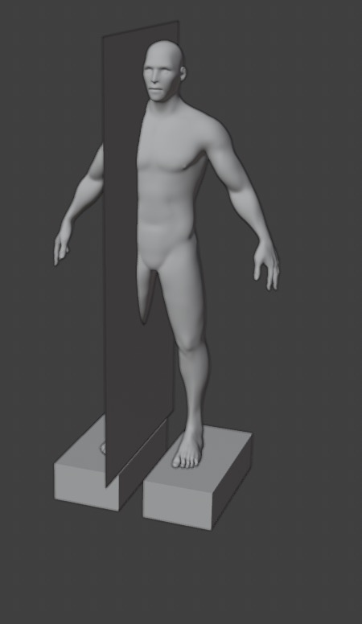

I worked as a program manager at SenseTime Research Institute for nearly a year, which not only allowed me to learn and practice the background knowledge of UX design and user study design, but also allowed me to master the skills of using simple blender to draw paper diagrams, etc. At the same time, I am also very good at programming and testing python, javascript, and CSS (one of the results can be found at https://openxrlab.org.cn/indexEN. I am responsible for the design and writing of the display demo).
The PCOS I am currently doing at DIKU is related to vibrotactile sensation, which makes me completely familiar with some research directions of tactile and ergonomics. In particular, I am very familiar with whole-body vibration and phantom sensation. In addition, I know some simple software and hardware skills, including MATLAB signal simulation, welding, basic circuit technology, Arduino, etc.
I studied animation and game programming during my undergraduate degree, and worked on a virtual human project while at SenseTime, so I am familiar with Unity programming and understand UE redirection. The master is studying at UIT, so is familiar with 3D printing and GCode. Understand human-computer interaction methods and theories.
Computer Science Master (Sep 2023 - Jun 2025)
Computer Science and Technology Bachelor (Sep 2018 - Jun 2022)
GPA: 85.2/100
Algorithm Product & Project Manager Research Institute (Jul 2022 - Apr 2023)
Our department wants to create a virtual live stream host for selling products, who can answer questions asked by users in the live broadcast room. Its responses are generated by a large language model.
To stimulate users' desire to purchase, I need to design a library of keywords and actions, and plan how to correlate them during the live broadcast to enhance the viewing experience of users. For example, for numbers 0-9, the corresponding actions include simply extending the corresponding fingers and waving the entire forearm to represent the numbers. When the host speaks the next word quickly and with a softer tone, the former action should be used for matching, otherwise, the latter is used. Additionally, to prevent visual fatigue from repetitive actions, the same keyword will not trigger the same action within five minutes, and so on.
Since the text generated by large models may sometimes be inaccurate, offensive, or problematic in various ways, and there is no method that can 100% avoid this issue; additionally, there might be times when users do not ask questions. I also need to consider whether to set up predetermined questions, when to activate these questions, and how to prioritize answering questions when there are too many from users, and so on.
Internship (Mar 2021 - Sep 2021)
We have created a special effects materials library to recommend effects for users to use on TikTok. I am responsible for the strategy design of this.
I attempted to calculate a recommendation score using factors like user like rate, save rate, and tag popularity. The higher the recommendation score, the more likely it is to be pushed to users. Then, we conducted A/B tests, determining the viability of the strategy based on the average conversion rate of the materials (the ratio of the number of people who click on the material to the number of users who actually use it) and user survey questionnaires.
This is the PCOS project I am currently working on. According to ergonomic knowledge, at a specific frequency, the human body will vibrate throughout the body, and different vibration frequencies or combinations of vibration modes may give people some wonderful experiences. Our previous experiments wanted to see whether different vibrations could cause vibrations in fixed parts of the human body, and more recently we have tried to make vibrations move in different directions within the human body. The PCOS project I am currently working on explores the moving phantom sensation under whole-body vibration. Completed the entire process from forming an idea, assembling and building equipment (including the selection and construction of wooden platforms, and welding programming of accelerators), designing user experiments, executing experiments, data analysis, and forming a thesis.
This is a test of my course. I developed a stand-alone game in which two tanks battle in a desert factory scene. The model was imported from the Unity asset store. Completed the layout of the scene, battle special effects and sound effects. Tank charging mechanism, ballistic simulation, and development of hit events.
Design plan: clarify the usage scenarios we want to target; consider boundary conditions; search for papers to find ideas for solving problems; design evaluation indicators.
GCode: Design GCode to control the 3D printer to launch printed items.
3D design: I am currently considering whether to make some small prototypes to help launch items. I have previously made Bluetooth headset protective cases.